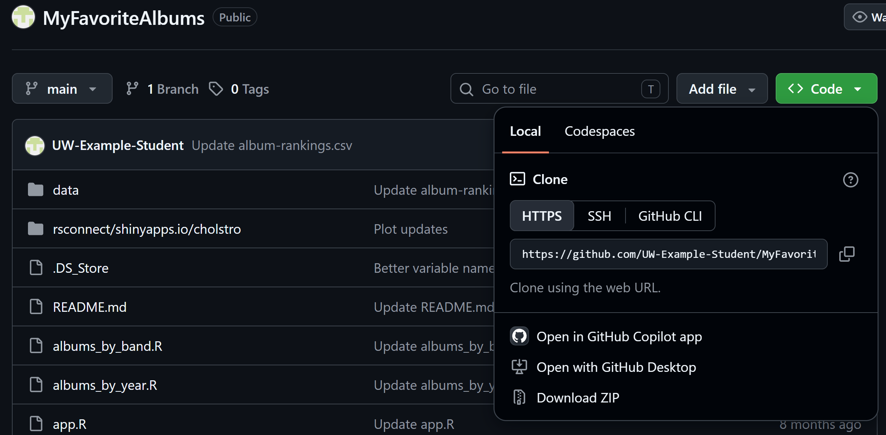
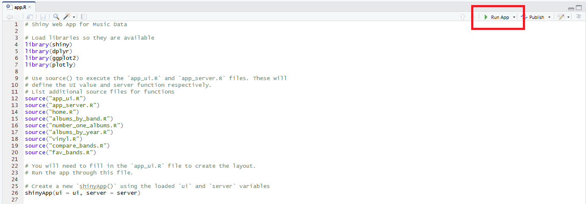
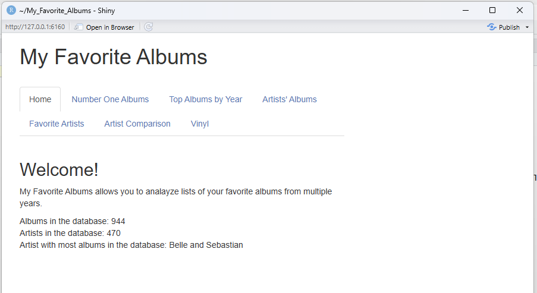

Getting Started with My Favorite Albums
Overview
This guide is for getting started with My Favorite Albums
Prerequisites
- R and RStudio installed
- Necessary Packages Installed follow Installing Packages
Installing My Favorite Albums
- Create a folder on your computer where you want My Favorite Albums to be stored.
- Open the My Favorite Albums GitHub repository .
- Click the green Code button near the top right of the ui.
-
Select Download ZIP from the menu.

Select Download ZIP from the repository's Code menu. - Open your Downloads folder and locate the ZIP file you just downloaded.
- Extract the ZIP file into the folder you created in Step 1. The extracted folder should contain the application files and folders.
Running My Favorite Albums
- Open RStudio.
-
Open the folder where you extracted My Favorite Albums. You can do
this from RStudio by selecting File and
Open File to open
app.R. -
If you opened the folder rather than a project file, locate and open
app.Rin the Files pane. -
Click the Run App button near the top of the editor.

Select Run App to start My Favorite Albums. -
The application should load in a new window and look like below.

The My Favorite Albums interface after the application starts.